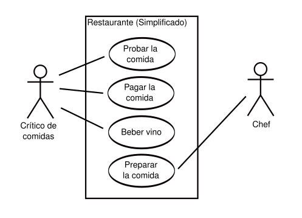
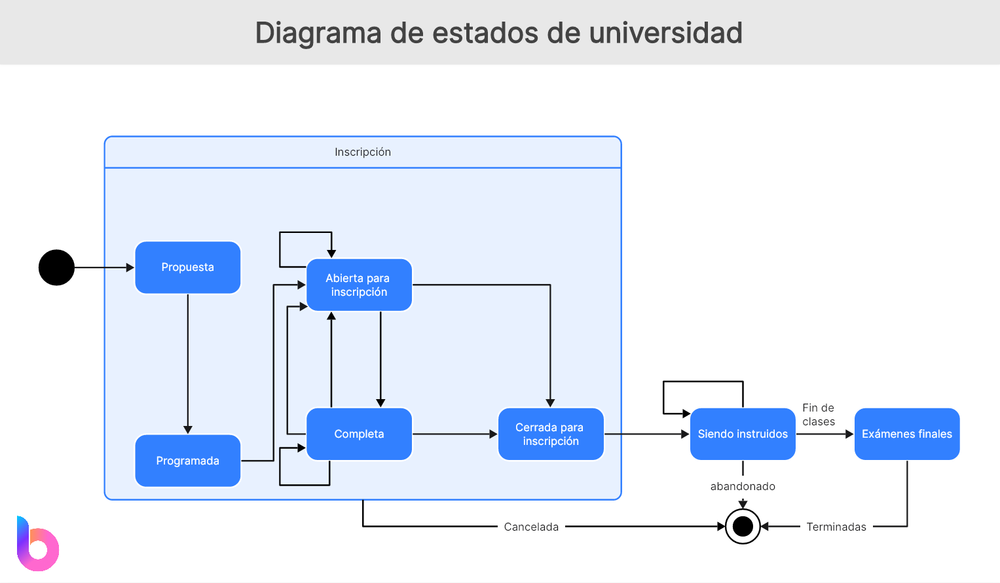
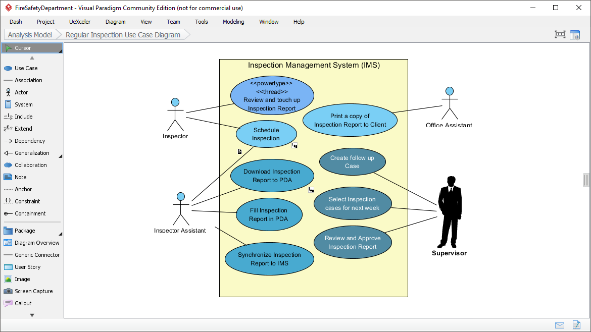

UT6. Modelado Dinámico: Diagramas de Comportamiento
El modelado dinámico permite representar cómo se comporta un sistema a lo largo del tiempo, mostrando procesos, interacciones y cambios de estado. En esta unidad se estudian los principales diagramas de comportamiento UML y su integración con el resto del diseño del software.
1. Tipos de Diagramas de Comportamiento
Los diagramas de comportamiento describen la parte dinámica del sistema: cómo reaccionan los elementos ante eventos y cómo interactúan entre sí. Complementan a los diagramas estructurales como el diagrama de clases.
Los principales tipos son:
- Diagramas de casos de uso: Representan las funcionalidades del sistema desde el punto de vista del usuario.
- Diagramas de interacción: Muestran cómo se intercambian mensajes entre objetos en un escenario concreto.
- Diagramas de actividades: Representan el flujo de trabajo de un proceso interno del sistema.
- Diagramas de estados: Muestran los diferentes estados que puede tener un objeto a lo largo del tiempo.
1.1 Diagramas de casos de uso
Los diagramas de casos de uso describen las funcionalidades del sistema desde el punto de vista del usuario o actor externo. Responden a la pregunta: ¿qué hace el sistema?
- Actor: rol externo que interactúa con el sistema
- Caso de uso: funcionalidad ofrecida
- Relaciones: asociación, include, extend y generalización
Ejemplo:

1.2 Diagramas de interacción
Los diagramas de interacción muestran cómo se intercambian mensajes entre objetos en un escenario concreto. Son clave para entender la lógica interna de una funcionalidad.
- Diagrama de secuencia: orden temporal de los mensajes
- Diagrama de comunicación: relaciones y flujo de mensajes
Ejemplo: Proceso de compra de un cliente.

1.3 Diagramas de secuencia
Los diagramas de secuencia representan el flujo de mensajes entre objetos en un escenario concreto, mostrando la interacción en orden temporal.
- Objetos participantes
- Mensajes intercambiados
- Orden temporal
Ejemplo: Proceso de login.

1.4 Diagramas de actividades
Los diagramas de actividades representan el flujo de trabajo de un proceso interno del sistema, mostrando acciones, decisiones y posibles ejecuciones paralelas.
- Inicio y fin del proceso
- Acciones o actividades
- Decisiones y bifurcaciones
- Flujos paralelos
Ejemplo: Proceso de autenticación con validación correcta o mensaje de error.

1.5 Diagramas de estados
Los diagramas de estados modelan el ciclo de vida de un objeto, representando los distintos estados por los que puede pasar y las transiciones provocadas por eventos.
- Estados
- Eventos
- Transiciones
- Acciones asociadas
Ejemplo: Un Pedido puede estar en los estados Creado, Pagado, Enviado, Entregado o Cancelado.

2. Interpretación y Creación de Diagramas
Además de saber crear diagramas, es fundamental interpretarlos correctamente para comprender el funcionamiento del sistema y detectar errores de diseño o requisitos incompletos.
2.1 Herramientas UML: Visual Paradigm
Visual Paradigm es una herramienta de modelado UML muy utilizada en el ámbito educativo y profesional. Permite crear todos los diagramas de comportamiento y mantener coherencia entre ellos.
- Soporte completo UML 2.x
- Ingeniería directa e inversa
- Exportación a PDF, Word e imágenes
- Versión gratuita para uso educativo

2.2 Interpretación de diagramas de comportamiento
Interpretar un diagrama implica analizar actores, flujos, mensajes, decisiones y estados, asegurando que el comportamiento representado es coherente con los requisitos del sistema.
Es importante identificar posibles inconsistencias, como mensajes que no tienen receptor o estados sin transiciones, para mejorar el diseño antes de la implementación.
Aspectos clave a analizar:
- Analizar actores y casos de uso (un actor es un rol que interactúa con el sistema)
- Seguir el flujo de mensajes en diagramas de interacción
- Identificar decisiones y bifurcaciones en diagramas de actividades
- Revisar estados y transiciones en diagramas de estados
2.3 Elaboración de diagramas
La creación de diagramas sigue una serie de pasos: comprender el sistema, identificar los elementos clave, seleccionar el diagrama adecuado y revisar la coherencia del modelo. Se pueden construir diagramas básicos y avanzados según la complejidad del sistema.
Pasos para elaborar diagramas de comportamiento:
- Identificar los actores y casos de uso
- Definir los flujos de mensajes
- Representar las decisiones y bifurcaciones
- Modelar los estados y transiciones
3. Aplicación Práctica en Proyectos Reales
En proyectos reales, los diagramas de comportamiento se utilizan desde el análisis de requisitos hasta el mantenimiento del sistema, facilitando la comunicación y la validación del diseño.
Beneficios en proyectos reales:
- Mejora la comunicación entre equipos
- Facilita la identificación de problemas
- Proporciona una base sólida para el desarrollo
3.1 Integración en el ciclo de desarrollo
Los diagramas de comportamiento se emplean en análisis, diseño, desarrollo, pruebas y mantenimiento, sirviendo como guía para implementar y validar el software.
Ejemplo de integración: En la fase de análisis se crean diagramas de casos de uso para definir funcionalidades, en diseño se elaboran diagramas de interacción para detallar la lógica, y en pruebas se utilizan diagramas de actividades para validar flujos de trabajo.
3.2 Relación con diagramas de clases
Los modelos dinámicos deben ser coherentes con los diagramas de clases: los actores y objetos se corresponden con clases, las acciones con métodos y los estados con atributos o condiciones.
Es fundamental mantener esta coherencia para asegurar que el diseño es consistente y que la implementación se ajusta a los requisitos definidos.
3.3 Buenas prácticas en el modelado dinámico
Para un modelado eficaz se recomienda claridad, simplicidad, coherencia entre diagramas, nomenclatura uniforme y validación continua con el equipo y el cliente.
Estas prácticas ayudan a crear modelos comprensibles, mantenibles y alineados con los objetivos del proyecto, facilitando el desarrollo y la evolución del software.